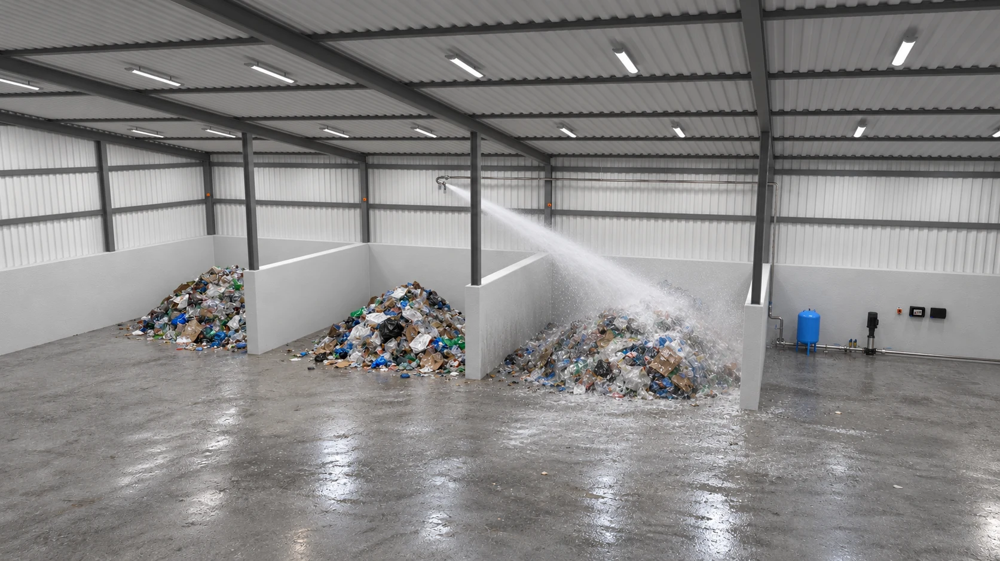
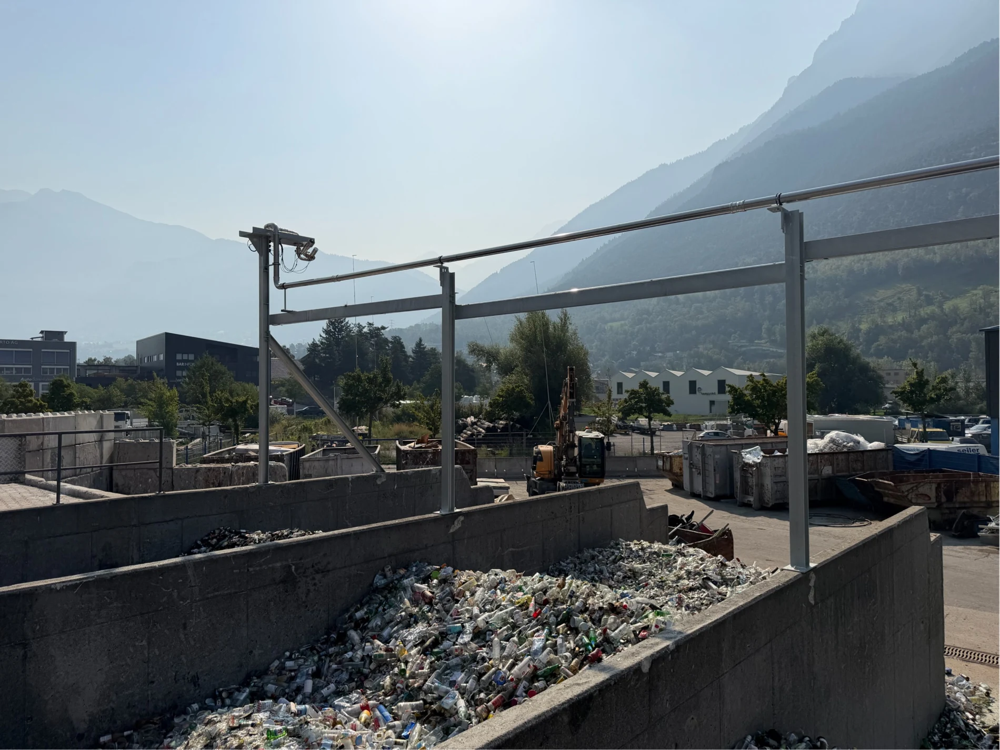
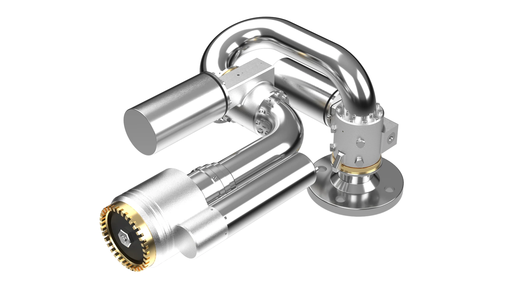

Acts automatically
Detection, aiming and water release without waiting for an operator.
Built for large, open risk areas.
For recycling facilities and open or semi-open risk areas, the Water Cannon brings detection and suppression together in one automatic system.
Designed to work as part of a new Firefly installation or as an upgrade to an existing system.

Application illustrationFIELD FOOTAGE
Flame detectors monitor open storage areas and automatically direct the water cannon towards the affected zone when a fire is detected.
Detection, aiming and water release without waiting for an operator.
Water is directed towards the affected area.
Connect to the Firefly Eximio platform.
Explore the response, step by step.

Illustrative sequenceFlame detectors continuously monitor the defined protection zones.
Compare nominal performance at 5 bar.

316L STAINLESS STEEL / 24V BLDC MOTORDN50 / 2 INCH
Coverage depends on installation and operating conditions. Firefly engineers the solution for your site.
Full product brochureFilms and product literature.
Everything in one place.
Showing 6 materials
Yes. Firefly can integrate the Water Cannon into a new system or assess it as an upgrade to an existing installation.
Manual control options include a joystick, ONE App and ONE Webb.
Pressure, mounting height, elevation and spray pattern affect reach. Firefly will assess the requirements of your protected area.
Tell Firefly about the area you want to protect.
info@firefly.se +46 (0)8 449 25 00